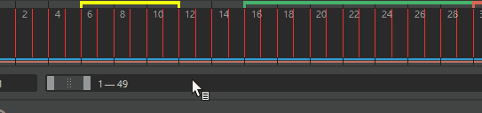
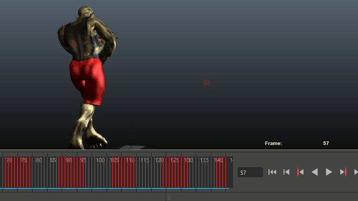

“时间滑块”(Time Slider)用于控制播放范围、关键帧和播放范围内的受控关键点。
- 在“时间滑块”(Time Slider)上单击鼠标右键以访问“动画控件”(Animation controls)菜单，该菜单包含用于“时间滑块”(Time Slider)的许多元素的选项。
- 通过将光标悬停在“时间滑块”(Time Slider)的顶边上，直到分隔条光标 出现，并向上或向下拖动此光标，调整“时间滑块”(Time Slider)的大小以使其更高或更紧凑。若要降低敏感度或禁用“时间滑块”(Time Slider)分隔条光标，请参见自定义“时间滑块”(Time Slider)主题中的相关部分。
当前时间指示器(Current Time Indicator)
在“时间滑块”(Time Slider)上拖动当前时间指示器
当前时间指示器是“时间滑块”(Time Slider)上的灰色块。可以拖动它以在动画中前后移动。
在“时间滑块”(Time Slider)上单击鼠标右键以访问“动画控件”(Animation controls)菜单，可用于轻松访问常见操作。
关键帧标记(Key ticks)
关键帧标记是“时间滑块”(Time Slider)中的红色（默认）标记，表示为选定对象设置的关键帧。选择关键帧后，它们显示为白色，而亮显时为蓝色（有关示例，请参见“在‘时间滑块’(Time Slider)上选择关键帧”）。受控关键点关键帧是一种特殊类型的关键帧，在“时间滑块”(Time Slider)中显示为绿色标记。
通过按 s 键在选定对象上设置关键帧。有关设置关键帧的详细信息，请参见设置关键帧和关键帧动画。
- 在“时间滑块”(Time Slider)上选择关键帧
- 如果需要在“时间滑块”(Time Slider)上选择一系列关键帧（例如，使用时间滑块书签(Time Slider Bookmarks)时），请按住 Shift 键并在“时间滑块”(Time Slider)上拖动。只要拖动光标 亮显，就可以移动关键帧。按住 Ctrl 键并拖动以复制关键帧。请参见编辑关键帧。
提示： 在“时间滑块”(Time slider)上，按住 Shift 键并拖动关键帧时，视口会更新。如果您不希望在拖动关键帧时视口随着当前帧的变化而更新（例如在处理大型场景时），请按住 Shift + Alt 并拖动关键帧。
按住 Shift 键并拖动关键帧与按住 Shift + Alt 并拖动关键帧。
- 可以使用颜色设置(Color Settings)窗口“时间滑块”(Time Slider)区域中的“范围”(Range)设置自定义选择范围的颜色。
- 颜色编码关键帧(Color-coded Keys)
- 可以使用颜色编码关键帧来显示哪条曲线设置了关键帧（例如旋转）。在关键帧标记上方，颜色编码关键帧显示彩色“调整钮”。
- 若要从常规关键帧标记切换到颜色编码关键帧，请在“时间滑块”(Time Slider)上单击鼠标右键，然后从“动画控件”(Animation controls)菜单中选择“颜色编码关键帧”(Color-coded Keys)。
-

时间滑块书签(Time Slider Bookmarks)
将光标悬停在时间滑块书签上可查看其名称
时间滑块书签(Time Slider Bookmarks)是沿“时间滑块”(Time Slider)顶部的彩色标记，可标记场景中的事件。书签可让您及时注意特定时刻，当您想要聚焦或亮显场景中的特定区域或时刻时，这非常有用。可以通过按住 Ctrl (Command) 并拖动书签中心 () 来移动书签。按住 Ctrl (Command) 键并拖动书签的左“腿”() 或右“腿”() 以对其进行缩放。书签光标将发生变化以表明“移动”(Move)模式处于活动状态。
通过单击范围滑块(Range Slider)中的“书签”(Bookmark)图标  或按 Alt (Option) + T，将书签添加到选定的时间范围。
或按 Alt (Option) + T，将书签添加到选定的时间范围。
有关详细信息，请参见创建书签。
Blue Pencil 帧
“时间滑块”(Time Slider)上的蓝色矩形是 Blue Pencil 帧
按住 Shift 键并单击以亮显“时间滑块”(Time Slider)上的一个或多个 Blue Pencil 帧，以重新排列它们。亮显后，拖动亮显区域任意一端的箭头以增大或缩小帧之间的计时。
有关详细信息，请参见使用 Blue Pencil 帧。
“缓存播放”(Cached Playback)状态行
“时间滑块”(Time Slider)上的蓝色和粉红色条带是“缓存播放”(Cached Playback)状态行
蓝线是动画的“缓存播放”(Cached Playback)状态，粉红线是动力学的“缓存播放”(Cached Playback)状态。
每当您编辑已缓存的场景时，状态行的已修改区域将暂时变为深蓝色，以显示已过期的动画片段，然后再次变为蓝色以表明这些值已更新。
当“缓存播放”(Cached Playback)遇到不受支持的节点时，它将进入安全模式。当“缓存播放”(Cached Playback)处于安全模式时，“缓存播放”(Cached Playback)状态行将变为黄色，并且“缓存播放”(Cached Playback)图标上会出现警告符号。有关当前导致“缓存播放”(Cached Playback)进入安全模式的原因的说明，请参见脚本编辑器。（您可以在“缓存播放”(Cached Playback)不支持的节点中找到当前不支持的节点的列表。）
在“缓存播放”(Cached Playback)状态行上单击鼠标右键以关闭或打开“缓存播放”(Cached Playback)，清除缓存，或选择新的缓存模式。您可以在颜色设置(Color Settings)中更改“缓存播放”(Cached Playback)状态行的颜色，并在缓存播放首选项(Cached Playback Preferences)中设置其宽度和位置。
有关“缓存播放”(Cached Playback)的详细信息，请参见使用“缓存播放”(Cached Playback)以提高播放速度。
时间单位(Time units)
“时间滑块”(Time Slider)上的直尺标记和相关数字可显示时间。若要定义播放速率，请在“设置”(Settings)首选项（“窗口 > 设置/首选项 > 首选项”(Window > Settings/Preferences > Preferences)）中选择所需的“时间”(Time)单位。Maya 的默认测量时间为每秒 24 帧，这是影片的标准帧速率。
当前时间字段
“时间滑块”(Time Slider)右侧的输入字段表示以当前时间单位表示的当前时间。可以输入一个新值来更改当前时间。场景将移动到该时间位置，并相应更新当前时间指示器。
音频(Audio)
“时间滑块”(Time Slider)中心的音频波形
在“时间滑块”(Time Slider)上单击鼠标右键以打开“动画控件”(Animation controls)菜单，从中可以选择“音频”(Audio)卷展栏以访问“音频”(Audio)菜单来管理 Maya 的音频设置。
导入音频文件时，其波形显示在“时间滑块”(Time Slider)上。请参见在“时间滑块”(Time Slider)上显示音频。